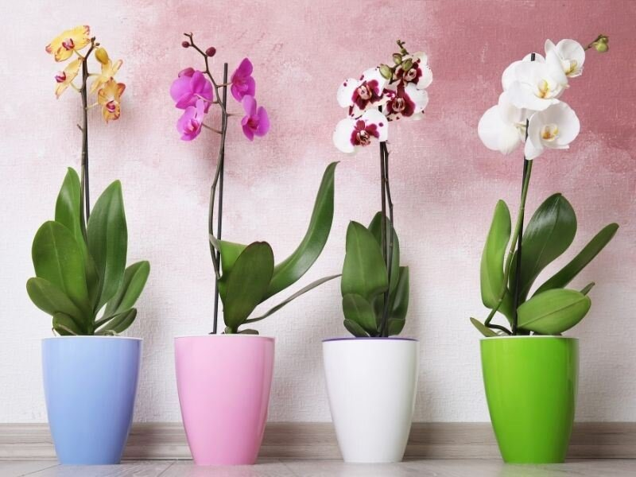
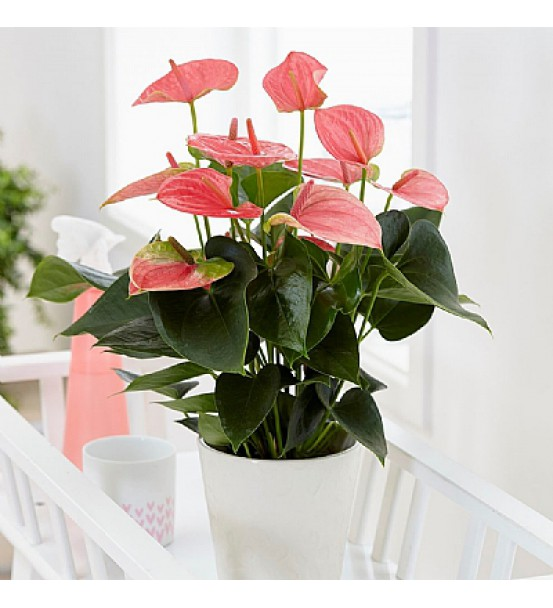
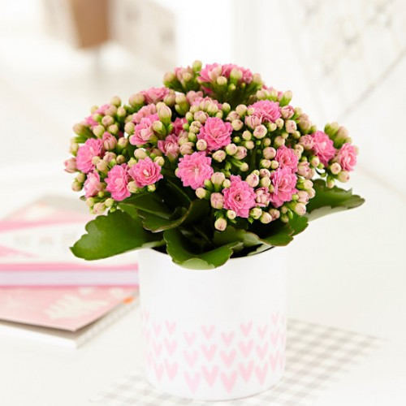
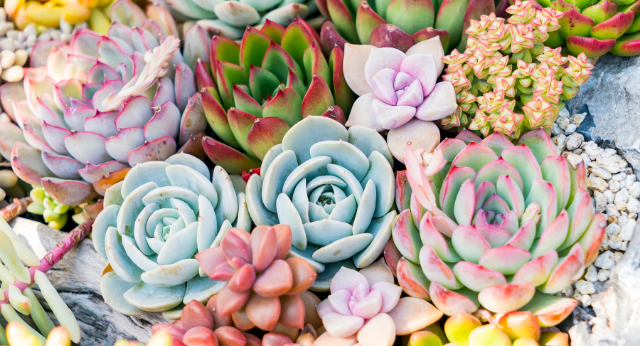

Orkide

Orkidegiller familyasına ait bir bitki olan orkide, hoş kokusu, şık duruşu ve renkli yapısıyla evlerde en çok tercih edilen çiçeklerden biridir. Dünyaya yaklaşık 763 cins olarak dağılan orkidenin kabul edilen 28.000 türü vardır. Meyvesi küçük bol tohumlu ve kapsül halindedir. Genellikle ototrof bazen de heterotrof bitkilerdir. Çok sayıda tohum üretirler. Ilıman mevsimleri seven bu bitki Orta Asya ülkeler, Afrika ve Tanzanya'da yetiştirilir. Anavatanı Asya ve Avustralya'nın tropik bölgeleridir. Ancak kutuplar dışında hemen her yerde yetiştirilebilirler.
Antorium

Antoryum birçok tropikal bitkiden, hatta devetabanından bile daha uyumludur; bir parça güneş görmek şartıyla bütün yıl kesintisiz çiçek açabilir.
Kalanchoe

Kalanşo çiçeği; turuncu, pembe, beyaz, sarı gibi renkte açan çiçekleriyle iç mekanlara en çok yakışan bitkilerden biridir. Kalanşo çiçeği sukulent ailesine ait bir bitki türüdür. Bakımı kolay bir bitki olmasının yanında dikkat edilmesi gereken bazı noktaları vardır.
Skulent

Kısa ve anlaşılır bir tanım olarak “dikensiz kaktüsler” olarak anılsa da sukulentler, gövdesinde ve dallarında veya yapraklarında su tutma becerisi yüksek olan etli bitki türü için kullanılan genel bir terimdir. “Bütün kaktüsler birer sukulenttir fakat bütün sukulentler birer kaktüs değildir” demek bu noktada doğru olacaktır.
Ev ve ofislerimizi mavi, yeşil, bordo elvan elvan renkleriyle güzelleştiren sukulentlerin, toprağı bir halı gibi kaplayıp yayılan ya da saksısından taşıp sarkan pek çok çeşidi bulunmaktadır. Yine Echeveria Subrigida gibi kış bahçeleri için soğuğa dayanıklı, Hawortia gibi sıcak ve kurak havaya dayanıklı olmak üzere farklı iklim gereksinimi olan sukulent türleri de mevcuttur.